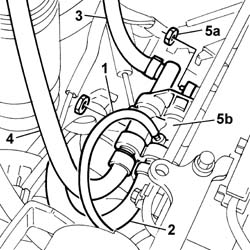

1060F50 FUEL RETURN MANIFOLD PIPE - R&R
- Path
- Procedures > 10 ENGINE > 1060 DIESEL FUEL INJECTION SYSTEM > 1060F INJECTORS AND LINES > 1060F50 FUEL RETURN MANIFOLD PIPE - R&R
- Kind
- repair procedure (removal / refitting; the operation number is the code)
- Applies to
- engines: 2.4 JTD 10V; all production periods
- Interactive page
- https://sloeber94.github.io/elrnDB-lThss/en/#/100688
Applies to: all engines; all production periods
 Removing
Removing
 Refitting
RefittingSee in Op. 1016A10
1. Disconnect the fuel return pipe from the injectors.
2. Disconnect the fuel return pipe from the pressure pump.
3. Disconnect the return return pipe to the tank.
4. Disconnect the return pipe to the fuel filter.
5. Undo the fixing nuts (5a) and remove the fuel return manifold pipe (5b).

Applies to: all engines; all production periods
Refitting
Removing- Fit the fuel return manifold pipe in the special housing on the intake manifold.
- Tighten the fixing nuts.
- Connect the return pipe to the fuel filter.
- Connect the return pipe to the tank.
- Cconnect the fuel return pipe from the pressure pump.
- Connect the fuel return pipe from the injectors.
See in Op. 1016A10